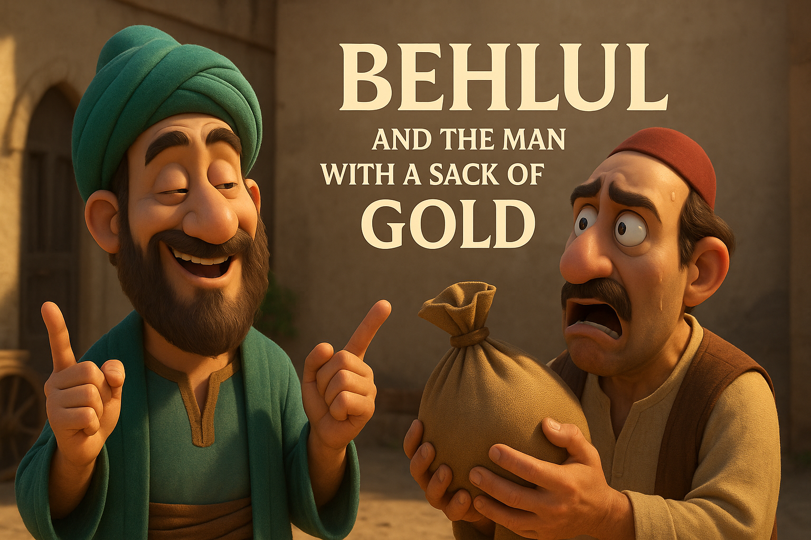

A rich merchant once ran to Behlul in the streets of Baghdad.
“O madman! My gold is gone. I buried it under a tree and now it’s missing!”
Behlul calmly said,
“Go bury your worries in the same hole.”
The man shouted,
“You mock me! I’ve lost everything!”
Behlul then asked,
“Was your wealth with you yesterday?”
“Yes!” cried the man.
“And today it’s gone?” Behlul asked.
“Yes,” the man sobbed.
Behlul pointed to the sky,
“Then it wasn’t truly yours. If it could leave you without saying goodbye, it was just visiting.”
The merchant stood silent. Behlul smiled,
“True wealth is what stays when the gold walks away.”← Back to stories